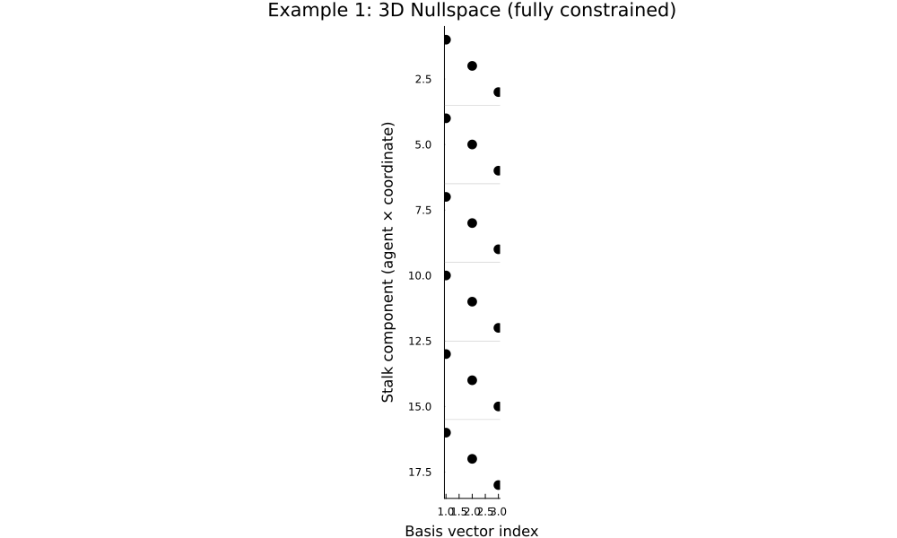
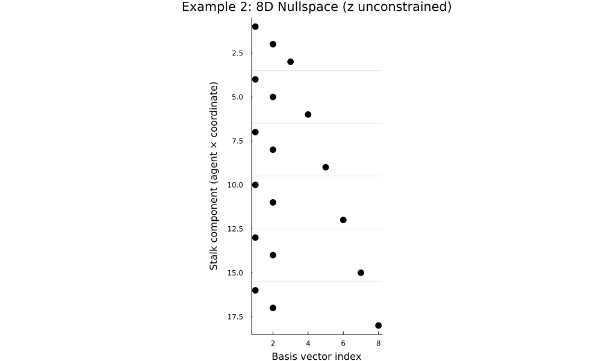

Computing the Nullspace of the Sheaf Laplacian
Introduction
This example demonstrates how to compute and visualize the nullspace of the Laplacian operator for a circular cellular sheaf. We construct a system of 6 agents, each with 3-dimensional stalks, arranged in a cycle topology. The nullspace of the Laplacian contains the global sections–-the solutions that are preserved by the sheaf Laplacian operator. Understanding the structure of this nullspace is fundamental to understanding the harmonic analysis and signal processing on cellular sheaves.
using CellularSheaves
using LinearAlgebra
using PlotsVisualization Helper Function
We define a generalized function to visualize nullspace basis vectors using a spy plot to show the sparsity structure of the nullspace basis matrix. Columns are sorted by the number of nonzero elements, with ties broken by the row index of the first nonzero. Horizontal lines mark agent boundaries.
function plot_nullspace_basis(V, n, stalk_dim; title="Nullspace basis vectors")
nnz_per_col = vec(sum(abs.(V) .> 1e-10, dims=1))
first_nnz = [findfirst(abs.(V[:, i]) .> 1e-10) for i in 1:size(V, 2)]
first_nnz = [isnothing(x) ? size(V, 1) + 1 : x for x in first_nnz]
sorted_idx = sortperm(collect(zip(size(V,2) .- nnz_per_col, first_nnz)))
V_sorted = V[:, sorted_idx]
p = spy(V_sorted, title=title, xlabel="Basis vector index", ylabel="Stalk component (agent × coordinate)",
markersize=6, legend=false, size=(1000, 600))
for i in 1:n-1
hline!(p, [i*stalk_dim + 0.5], color=:gray, label="", linewidth=0.5, alpha=0.5)
end
p
endplot_nullspace_basis (generic function with 1 method)Example 1: Identity Restriction Maps
In this first example, we demonstrate the nullspace of a sheaf where all edges are fully constrained by identity restriction maps. This means that adjacent agents must agree on all components of their stalk values. The resulting nullspace consists of constant sections–-vectors that have the same value at every agent. For a 3-dimensional stalk, this gives a 3-dimensional nullspace.
Building the Sheaf
We start by creating a Euclidean sheaf with 6 vertices (agents), each equipped with a 3-dimensional vector space as its stalk. The stalks represent local data or state at each agent.
n = 6
stalk_dim = 3
F = EuclideanSheaf{Float64}(Int[])
for i in 1:n
add_vertex_stalk!(F, stalk_dim)
endNext, we add edges connecting the agents in a cycle. Each edge is equipped with the identity restriction map, meaning that sections on adjacent agents must have the same value where they overlap.
for i in 1:n
v1 = i
v2 = (i % n) + 1
rm = Matrix{Float64}(I, stalk_dim, stalk_dim)
add_sheaf_edge!(F, v1, v2, rm, rm)
endComputing the Nullspace
We call nullspace_ldlt directly on the sheaf. Internally it forms the Laplacian $X = d^\mathsf{T} d$ from the coboundary map $d$, factorises it as $X = P^\mathsf{T} L D L^\mathsf{T} P$ via a sparse Chordal LDLt decomposition, and returns a basis for the nullspace from the zero-diagonal entries of $D$. The nullspace of the Laplacian is exactly the space of global sections of the sheaf.
V = nullspace_ldlt(F)18×3 Matrix{Float64}:
1.0 0.0 0.0
0.0 1.0 0.0
0.0 0.0 1.0
1.0 0.0 0.0
0.0 1.0 0.0
0.0 0.0 1.0
1.0 0.0 0.0
0.0 1.0 0.0
0.0 0.0 1.0
1.0 0.0 0.0
0.0 1.0 0.0
0.0 0.0 1.0
1.0 0.0 0.0
0.0 1.0 0.0
0.0 0.0 1.0
1.0 0.0 0.0
0.0 1.0 0.0
0.0 0.0 1.0Visualizing the Nullspace
We use our visualization helper function to show the three orthogonal projections of the nullspace basis vectors. Notice that the basis vectors are highly structured: they represent constant sections where each coordinate direction is independently constant across all agents.
plot_nullspace_basis(V, n, stalk_dim; title="Example 1: 3D Nullspace (fully constrained)")
Example 2: Partial Restriction Maps
Effect of Partial Constraints
In this second example, we modify the edge structure to allow one component of the stalk to vary freely across edges. We keep edge stalks at 3-dimensional but restrict them only in the x and y components using the restriction map $[1\ 0\ 0;\ 0\ 1\ 0]$. This leaves the z component unconstrained on edges–-agents can have different z values even on adjacent edges.
This partial constraint has a dramatic effect on the nullspace: in addition to the 3 constant sections, we now get 3 additional basis vectors representing the free z degrees of freedom at each agent. The result is a 6-dimensional nullspace.
Building the Modified Sheaf
F2 = EuclideanSheaf{Float64}(Int[])
for i in 1:n
add_vertex_stalk!(F2, stalk_dim)
endAdd edges with partial restriction maps: only x and y are constrained
for i in 1:n
v1 = i
v2 = (i % n) + 1 # Restriction map that selects only x and y components
rm = [1.0 0.0 0.0; 0.0 1.0 0.0]
add_sheaf_edge!(F2, v1, v2, rm, rm)
endComputing the Nullspace with Partial Constraints
V2 = nullspace_ldlt(F2)18×8 Matrix{Float64}:
0.0 0.0 0.0 0.0 1.0 0.0 0.0 0.0
0.0 0.0 0.0 0.0 0.0 0.0 1.0 0.0
0.0 0.0 0.0 0.0 0.0 0.0 0.0 1.0
0.0 0.0 0.0 0.0 1.0 0.0 0.0 0.0
0.0 0.0 0.0 0.0 0.0 0.0 1.0 0.0
0.0 0.0 0.0 1.0 0.0 0.0 0.0 0.0
0.0 0.0 0.0 0.0 1.0 0.0 0.0 0.0
0.0 0.0 0.0 0.0 0.0 0.0 1.0 0.0
0.0 0.0 0.0 0.0 0.0 1.0 0.0 0.0
0.0 0.0 0.0 0.0 1.0 0.0 0.0 0.0
0.0 0.0 0.0 0.0 0.0 0.0 1.0 0.0
0.0 1.0 0.0 0.0 0.0 0.0 0.0 0.0
0.0 0.0 0.0 0.0 1.0 0.0 0.0 0.0
0.0 0.0 0.0 0.0 0.0 0.0 1.0 0.0
0.0 0.0 1.0 0.0 0.0 0.0 0.0 0.0
0.0 0.0 0.0 0.0 1.0 0.0 0.0 0.0
0.0 0.0 0.0 0.0 0.0 0.0 1.0 0.0
1.0 0.0 0.0 0.0 0.0 0.0 0.0 0.0Visualizing the Extended Nullspace
With partial constraints, the nullspace is now 8-dimensional. We can see this in the visualization: the basis vectors are more spread out, and we see additional degrees of freedom particularly in the z-component projections (y vs z and x vs z).
plot_nullspace_basis(V2, n, stalk_dim; title="Example 2: 8D Nullspace (z unconstrained)")